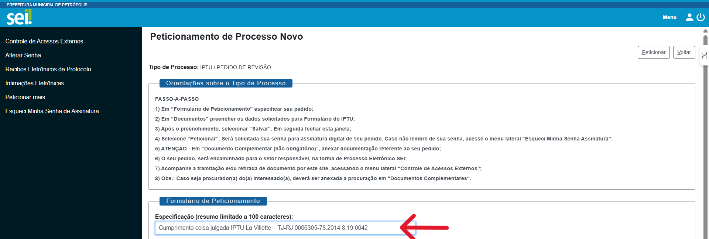
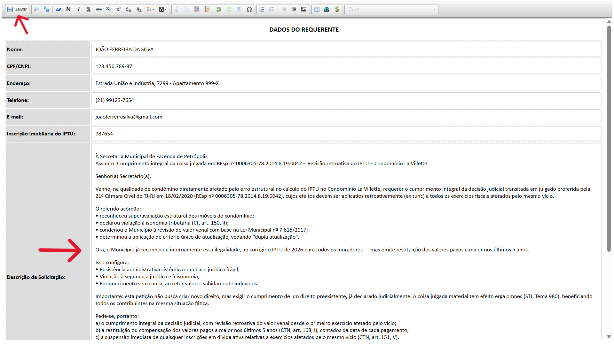

Guia Passo a Passo: Abertura de Processo Eletrônico (SEI)
Esta petição busca a revisão retroativa do valor venal do seu IPTU, com base em decisão judicial já transitada em julgado que reconheceu superavaliação estrutural no Condomínio La Villette. O objetivo é obter restituição ou compensação dos valores pagos a maior nos últimos 5 anos.
Siga as instruções abaixo para realizar o peticionamento eletrônico junto à Prefeitura de Petrópolis.
1. Seleção do Serviço
- Portal: petropolis.rj.gov.br/pmp/index.php/sei/processos-eletronicos
- Acesse o portal e selecione a aba IPTU - Imposto Predial e Territorial Urbano.
- Clique na opção desejada, como PEDIDO DE REVISÃO.

2. Acesso ao Sistema
- Na tela inicial do SEI, escolha Acessar com o usuário externo do SEI.

3. Identificação do Usuário
- Insira seu e-mail e senha cadastrados para entrar no ambiente logado.

4. Início do Peticionamento
- No campo Especificação, descreva brevemente o resumo do seu pedido.
- Copie e cole exatamente este texto:
Cumprimento coisa julgada IPTU La Villette – TJ-RJ 0006305-78.2014.8.19.0042.

5. Preenchimento do Formulário Principal
- Clique em Formulário para IPTU para editar o conteúdo principal.

- Preencha todos os Dados do Requerente e a descrição detalhada da solicitação antes de salvar.
- Dentro do campo da descrição detalhada, copie e cole exatamente este texto:
À Secretaria Municipal de Fazenda de Petrópolis Assunto: Cumprimento integral da coisa julgada em REsp nº 0006305-78.2014.8.19.0042 – Revisão retroativa do IPTU – Condomínio La Villette Senhor(a) Secretário(a), Venho, na qualidade de condômino diretamente afetado pelo erro estrutural no cálculo do IPTU no Condomínio La Villette, requerer o cumprimento integral da decisão judicial transitada em julgado proferida pela 21ª Câmara Cível do TJ-RJ em 18/02/2020 (REsp nº 0006305-78.2014.8.19.0042), cujos efeitos devem ser aplicados retroativamente (ex tunc) a todos os exercícios fiscais afetados pelo mesmo vício. O referido acórdão: • reconheceu superavaliação estrutural dos imóveis do condomínio; • declarou violação à isonomia tributária (CF, art. 150, II); • condenou o Município à revisão do valor venal com base na Lei Municipal nº 7.615/2017; • determinou a aplicação de critério único de atualização, vedando "dupla atualização". Ora, o Município já reconheceu internamente essa ilegalidade, ao corrigir o IPTU de 2026 para todos os moradores — mas omite restituição dos valores pagos a maior nos últimos 5 anos. Isso configura: • Resistência administrativa sistêmica com base jurídica frágil; • Violação à segurança jurídica e à isonomia; • Enriquecimento sem causa, ao reter valores sabidamente indevidos. Importante: esta petição não busca criar novo direito, mas exigir o cumprimento de um direito preexistente, já declarado judicialmente. A coisa julgada material tem efeito erga omnes (STJ, Tema 980), beneficiando todos os contribuintes na mesma situação fática. Pede-se, portanto: a) o cumprimento integral da decisão judicial, com revisão retroativa do valor venal desde o primeiro exercício afetado pelo vício; b) a restituição ou compensação dos valores pagos a maior nos últimos 5 anos (CTN, art. 168, I), contados da data de cada pagamento; c) a suspensão imediata de quaisquer inscrições em dívida ativa relativas a exercícios afetados pelo mesmo vício (CTN, art. 151, V). Fundamento-me em: (i) CF, art. 150, II (isonomia); (ii) Lei Municipal 7.615/2017 (critério único); (iii) CTN, arts. 168, I (repetição de indébito) e 151, V (suspensão da exigibilidade); (iv) Súmula 7/STJ (prova pericial soberana); (v) Acórdão TJ-RJ 0006305-78.2014.8.19.0042 (coisa julgada material com efeitos ex tunc e erga omnes). Anexo: comprovantes de pagamento, carnê do IPTU, cópia do acórdão e Manifestação de Preferência.
- Após informar os dados, clique no botão "Salvar" e feche a janela.

6. Anexar Documentos Complementares
- Selecione o arquivo em seu dispositivo e preencha os campos conforme a tabela abaixo.
- O campo "Tipo de Documento" é fixo como "Documentação", então o complemento é o que realmente identifica o conteúdo.
- No campo "Nível de Acesso", selecione a opção Público.
- Sobre o Tipo de Conferência: escolha Nato Digital (se o arquivo já nasceu no computador) ou Digitalizado (se você tirou foto ou escaneou um papel físico).
- Clique em Adicionar para incluir cada documento na lista oficial do processo.
📋 Descrição recomendada por documento
| Documento | Tipo de Documento | Complemento do Tipo de Documento |
|---|---|---|
| Carteira de Motorista (ou de Identidade/CPF) | Documentação | CNH com Identidade e CPF |
| Comprovantes de pagamento (IPTU 2021, 2022, 2023, 2024) | Documentação | Comprovante de Pagamento IPTU [ano] |
| Carnê do IPTU (capa com valor venal) | Documentação | Carnê IPTU [ano] – Valor Venal e Imposto |
| Cópia do acórdão TJ-RJ 0006305-78.2014.8.19.0042 | Documentação | Acórdão TJ-RJ 0006305-78 – Jurídico |
| Manifestação de Preferência (restrição/compensação/exercícios) | Documentação | Forma de Reparação e Exercícios |

- Siga adicionando documentos ao processo.

7. Finalização e Envio
- Confira os documentos na lista e clique no botão Peticionar para concluir o envio.
- Clique na caixinha vermelha marcada com um X, se quiser remover um documento já anexado.
- Clique no botão Voltar, se quiser voltar para a página anterior.
- Clique no botão no alto à direita, se quiser se desconectar da sua conta (logoff).

8. Acompanhamento do Processo
- Para monitorar seu pedido, acesse o menu Controle de Acessos Externos.
- Verifique o número do processo (ex: PMP.000699/2026).

Dica: Guarde o número do seu processo para consultas futuras junto aos canais de atendimento da Prefeitura.